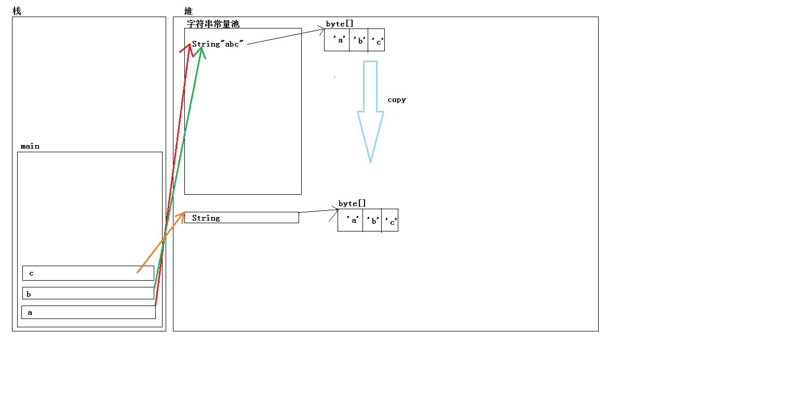

上次提前说了java中的面向对象，主要是为了使用这些常见类做打算，毕竟Java中一切都是对象，要使用一些系统提供的功能必须得通过类对象调用方法。其实Java相比于C来说强大的另一个原因是Java中提供了大量可用的标准库
字符串
字符串可以说是任何程序都离不开的东西，就连一个简单的hello world程序都用到了字符串，当时C语言中对字符串的支持并不太好，C语言中的字符串实质上是一个字符数组。为了方便不同的C/C++库都有自己的字符串实现。而Java中内置了对字符串的支持，Java中的字符串是一个叫做String的对象。
根据jdk文档的描述，我们需要注意一下几点：
- Java程序中的所有字符串文字（例如”abc” ）都被实现为此类的实例
- String对象是可以共享的
- String对象是不可变的
字符串的内存分布
一般把类似于 “abc” 这样直接通过字面值表示的字符串作为字面常量，这种在Java中也是一个字符串，只是它与普通的new出来的字符串在内存的存储上有点不一样，下面请看下面的代码
1 | class StringDemo{ |
针对字符串来说 == 比较的是它们的地址是否相同，这个程序分别输出的是 true、false、false，也就是说a b 是指向的同一个地址空间，而c则不是。它们的内存分布如下:

一般程序在加载到内存地址空间后，会被划分为4个部分，全局数据段、代码段、堆、栈。而全局代码段是用来存放全局变量的。在C中如果我们写下这样的代码:
1 | char* psz1 = "abc"; |
那么在程序加载到内存中时，在全局数据段中会存在一个连续的内存空间保存的是 ‘a’,’b’,’c’,’\0’ 这4个值，一旦有char型指针指向”abc” 这样的字符串，那么系统会自动将这段内存的地址给赋值到对应的指针变量中，而且这个内存是只读内存，如果尝试往里面写入数据，则会造成程序崩溃。
Java中也是类似的，当出现 “abc” 的时候，其实系统早就为它在堆中创建了一个String对象，如果去阅读String的源码就会发现String中负责保存字符串的是一个 byte型的数组，所以在初始化的时候会再创建一个byte型数组，然后由字符串中成员变量保存它的地址，所以在内存图中看到有String也有byte[]。而且这个字符串是保存在堆中的常量字符串池中的，它的生命周期与程序相同（或者说与主线程相同）。
每当直接使用 “abc” 这样的字面常量的时候会自动将常量字符串池中相关的字符串对象的指针赋值给对应的对象。这样造成了上述程序中 a == b 为true的情况。而c是通过new关键字在程序运行期间动态创建的。所以JVM会在程序执行到这步的时候额外创建一个对象，并将 “abc” 这个字符串对应的byte[] 中的值拷贝到新的内存中。
这样就很容易理解上面的前两条了，至于字符串不可变，可以参考我之前写的关于类型中的说明(字符串的值发生改变时，在内存中其实是开辟了一块新的内存用于保存新的字符串内容，而丢弃了从前的字符串)
常见字符串方法
这里再简单的列举一下字符串中常见的方法,这些方法都可以在JDK文档都可以查到。
1 | String(); //初始化新创建的 String对象，使其表示空字符序列 |
注意一下，这里返回数组或者新字符串的，都是在函数内部新建的，与原来的无关。所以这里是没办法拿到字符串底层的数组对象再来修改内存值的。
数组
java中数组的定义如下:
1 | int[] Array1 = new int[10]; //定义了一个拥有10个整型数据的数组 |
相比于C中数组的定义来说，Java中的定义更容易让人理解，对应数据类型后面加一对 [] 就是对应的数组类型了。而C中，中括号是写在变量后面的，相比于Java中的定义来说就显的有点怪异了。或者说C中从根本上来说数组并不算是一种特别的数据类型，仅仅只是开辟相同数据类型的一块连续的内存而已。至于[] 在C中应该只是表示寻址而已，毕竟汇编中我们经常看到类似于 esp:[eax] 这样的东西。
Java中的数组是一种单独的数据类型，它是一种引用类型，也就是说它的变量名中保存的是它的地址。
它的使用十分的简单，与C/C++中数组的使用基本相同，注意事项也是基本相同。但是有一点很重要的不同，Java中的数组允许动态指定长度，也就是通过变量来指定长度，而C中必须静态的指定长度，也就是在程序运行之前就需要知道它的长度。这是因为Java中数组是引用类型，是new在堆上的，而C中数组是分配在全局变量区或者栈上的，在程序运行之初就需要为数组分配内存。
1 | //这样的代码是可以编译通过的 |
数组作为函数参数
1 | import java.util.Arrays; |
运行上述的代码，发现函数中修改array的值在函数结束后也可以生效，这是因为数组是一个引用类型，在C中我们说要想改变实参的值，需要传入对应的引用或者指针。在函数中通过引用访问，实际上在访问对应的内存，所以这里其实是在修改对应内存的值。当然可以修改实参的值了。
ArrayList类
之前在数组中，我们说数组一旦定义，是不能改变大小的，那么如果我后续需要使用可变大小的数组呢？Java中提供了ArrayList这样的容器。由于它是一个通用的容器，而java又是一个强类型的语言，所以在定义的时候需要事先指定我们需要使用容器存储何种类型的数据。一般ArrayList的定义如下:
1 | ArrayList<String> array = new ArrayList(); |
需要注意的是容器中只能存储引用类型，不能存储像int、double、char这样的基本类型，如果要存储这样的数据，需要存储它们对应的封装类。比如int 类型对应的封装类为 Integer。
它的常用方法如下:
1 | ArrayList(); //构造方法 |
键盘输入
Java中的键盘输入主要通过Scanner类来实现，Scanner需要提供一个输入流，从输入流中获取输入。一般常用的输入流是 System.in 表示从键盘输入,例如：
1 | Scanner sc = new Scanner(System.in); |
Scanner类中常用方法是一系列的next方法，next方法主要功能是根据指定 的分割符，从输入流中取出下一个输入并做相应的转化，比如nextInt()会转化为int，nextBoolean() 会转化为boolean类型等等，next()方法会直接转化为字符串。
默认情况下next函数会通过空格进行转化。
1 | import java.util.Scanner; |
这段代码，会将输入的数据依次存储到ArrayList容器中。因为程序事先不知道用户会输入多少数据，所以这里采用可以可变长度的容器来存储
1 | //输入(> 表示cmd的提示符) |
上述代码首先执行到sc.next 位置，并且中断下来，我们输入上述的一些字符串，然后回车，然后程序继续执行，在循环中根据空格，依次从里面取出每一个值，并放到容器中。当没有值时，程序会再次中断在sc.next() 的位置，这个时候输入 ctrl + c ，此时程序再次执行到 sc.hasNext() 这个地方会返回false，这个时候循环退出，并依次打印这些内容。
这个程序证明了上面说的，next方法会根据指定的分割符，依次从输入流中取出下一个输入。当然如果想要一次读取一行，可以使用 nextLine方法。
更多内容请查阅JDK文档。